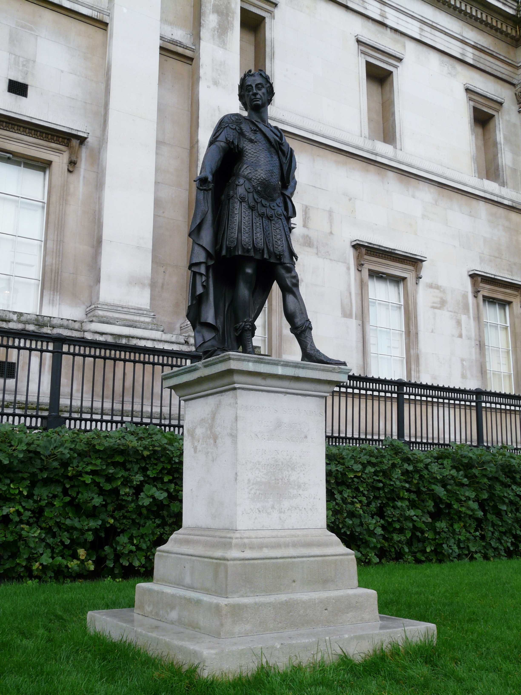
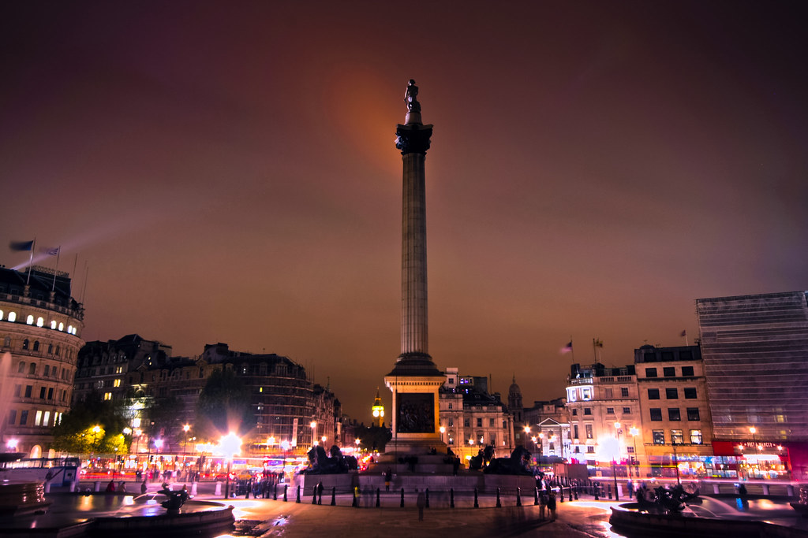
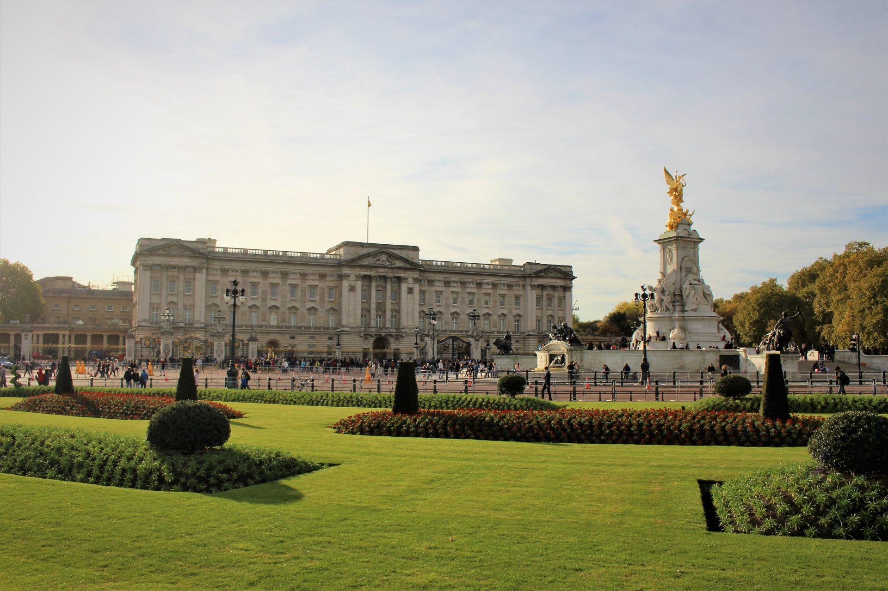

London has many world-famous attractions which showcase Britain's history and both its past and present culture from the stone age to the Victorian era.

" Captures Nelson's column as a stark reminder of past British glory."
- Lawrence Durrell
Trafalgar Square is a famous landmark in Westminster, Central London. It is one of the city's most popular tourist attractions; visitors from around the world come to admire Nelson's Column, the historic statue in the main courtyard, but there are also live performers and many special events. It is for this reason that Trafalgar Square is constantly a favourite for both locals and travellers

"Don't watch the clock; do what it does. Keep going"
- Sam Levenson
Big Ben is found in Westminster. If you have seen any picture of London, you have probably seen Big Ben. It is arguably the most iconic sight in London.
"The shrine of the world's liberties; the home and citadel of free government."
- Winston Churchill
The Houses of Parliament is the site of the UK's main governing body, and yes, it is a tourist site with thousands of people coming to see the building and see what it has in store.

"A symbol of the nation rather than just a house"
- Unknown
Buckingham Palace is the main residence of the British monarch, but the site is also a tourist site. Tourists get to see its grand architecture, the Victoria memorial, and the famous Changing of the Guard ceremony.